🔥 Luistert je hond niet meer?
Leer de wetenschappelijk onderbouwde aanpak – die speciaal is ontwikkeld voor gewone hondeneigenaren – om een "onhandelbare" hond opnieuw te leren luisteren, zonder dat hij schreeuwt, strijdt of miscommunicatie heeft. Leer met je hond praten in zíjn natuurlijke taal!
Wanneer je moeite hebt met het omgaan met een hond die je niet begrijpt en niet luistert, van dagelijkse frustratie tijdens wandelingen, schuldgevoelens omdat je bang bent dat je iets verkeerd doet, of de chaos die je gezin overweldigt, biedt dit boek je de hulpmiddelen, inzichten en vooral de rust waar je al geruime tijd naar verlangt.
Ja, ik wil deze speciale bundel kopen →
Als je het gevoel hebt dat je een slecht baasje bent en dat je de opvoeding van je hond beter had moeten aanpakken – dan krijg je nu een tweede kans. Hier zijn 8 redenen waarom dit boek je leven kan veranderen en een einde maakt aan frustratie, schaamte en dagelijkse onrust.
Je maakt een einde aan het eindeloze getrek aan de lijn dat elke wandeling tot een gevecht maakt. Geen pijnlijke armen meer, geen uitputting na een simpel blokje om. Hier begint het ontspannen wandelen.
Je krijgt een compleet pakket om blaffen, springen en chaos in huis aan te pakken. Zelfs als je denkt: "Ik heb alles al geprobeerd." Precies daarvoor is dit boek geschreven.
Je stopt met het denken dat je een slecht baasje bent. Dit boek is geschreven in gewone taal – geen vakjargon, geen ingewikkelde theorieën. Gewoon heldere uitleg die je meteen kunt toepassen. Eindelijk een boek dat je echt begrijpt.
Je krijgt één helder plan in plaats van honderd tegenstrijdige tips. Geen verwarrende YouTube-filmpje's of verouderde dominantie-methodes. Alleen duidelijke stappen die werken – ook als je hond "koppig" is.
Je hond luistert niet alleen thuis, maar ook buiten. Zodra je de deur uit gaat, lijkt hij nu een andere hond! De Hondenbijbel leert je hoe je training omzet naar de echte wereld – op straat, in het park, overal.
Je ontvangt 3 waardevolle bonus e-books (totale waarde van: €66) die je nergens apart kunt kopen: "Langlevendheid begint in de voerbak" – ontdek hoe voeding het gedrag én de gezondheid van je hond beïnvloedt. "Waarom Doet Hij Dat? – 100 Hondenproblemen" – eindelijk begrijp je waarom je hond doet wat hij doet. "Top 20 Spelletjes die je hond écht moe maken" – leer spelletjes die je hond mentaal uitputten, zodat hij thuis rustig is. Alle drie gratis bij je bestelling.
Je ontvangt een pakket dat het hele gezin kan volgen. Geen ruzie meer over wie te streng of te soft is. Eén aanpak, duidelijk voor iedereen – ook voor je partner en kinderen.
Je bouwt eindelijk de band die je altijd al wilde: echte maatjes. Niet baas en hond, maar twee partners die elkaar begrijpen. Blije hond, blije baas – dat is waar het om draait.
Wij betalen de verzendkosten voor jou – helemaal gratis. Jij betaalt alleen € 35 voor het complete pakket: het boek + 3 e-books. Geen verborgen kosten, geen verrassingen.
Uitgebreide 30 dagen geld-terug-garantie – geen standaard 14 dagen, maar een volle maand om te ontdekken of dit voor jou werkt. Merk je geen verbetering? Je ontvangt dan elke euro terug, zonder vragen, zonder gedoe.
Je krijgt eindelijk rust – thuis én onderweg. Minder stress, minder schaamte, minder "sorry" zeggen. En meer trots, harmonie en echte verbinding met je hond. Dit is geen boek – dit is een complete opleiding voor hondenbaasjes, voor de prijs van een etentje.
⏰ Tijdelijke aanbieding – alleen zolang de voorraad strekt! Bestel nu “De Hondenbijbel” 📖 met alle gratis bonussen 🎁 voor slechts €35 💰 in plaats van €97 ⚠️


📋 Productspecificaties
| Titel | De Hondenbijbel |
| Auteur | Lars Vermeulen |
| Pagina’s | 270+ pagina’s |
| Inclusief | 3 bonus e-books (praktijkgidsen) |
| Taal | Nederlands |
| Formaat | Paperback |
| Verschenen | 2026 |
| Uitgever | Performance Marketing Solution s.r.o. |
| Prijs | €35,– incl. BTW |
| Verzending | Gratis (NL & BE) |
| Garantie | 30 dagen geld-terug |
Dit boek kan precies datgene zijn wat je tot nu toe in de opvoeding van je hond hebt gemist 🐕
Misschien heb je al zoveel geprobeerd.
Cursussen waar ze "dominantie" predikten, maar je hond werd alleen maar banger of koppiger. YouTube-tips die tegenstrijdig waren en in de praktijk niets veranderden. Trainers die zeiden dat je strenger moest zijn – terwijl je voelde dat het niet klopte.
En toch ben je hier – omdat je vanbinnen weet dat er een andere manier moet zijn. Een manier die écht werkt. Die gebaseerd is op hoe honden werkelijk denken en leren. Niet op verouderde mythen of dominantie-onzin.
📘 De Hondenbijbel is de eerste en enige Nederlandstalige gids die hondenpsychologie vertaalt naar de praktijk – geschreven voor gewone baasjes, niet voor experts. Geen vakjargon, geen ingewikkelde theorieën. Gewoon heldere taal die je meteen begrijpt. Je leert eindelijk waarom je hond doet wat hij doet. En nog belangrijker: hoe je met hem communiceert op een manier die hij van nature begrijpt.
WAAROM TRADITIONELE METHODES NIET WERKTEN
Dit is waarom traditionele methodes bij jou niet werkten:
- Ze negeerden hoe het hondenbrein écht werkt – en dwongen je hond tot gehoorzaamheid in plaats van samenwerking
- Ze losten alleen de symptomen op (blaffen, trekken, springen) zonder de onderliggende oorzaak aan te pakken
- Ze gaven je losse tips zonder samenhangend systeem – waardoor je hond verward raakte en jij gefrustreerd
- Het werkten alleen op het trainingsveld – maar buiten op straat was hij alles vergeten
DE HONDENBIJBEL PAKT HET ANDERS AAN
De Hondenbijbel pakt het fundamenteel anders aan. Gebaseerd op de nieuwste inzichten uit gedragswetenschap en hondenpsychologie leer je:
- De taal van je hond te begrijpen – zodat je weet wat hij je probeert te vertellen voordat het probleem escaleert
- Waarom je hond "ongehoorzaam" lijkt – en hoe je zijn natuurlijke instincten gebruikt in plaats van ertegen te vechten
- Het 4-pijler systeem dat wandelingen, huisregels, mentale stimulatie én voeding combineert tot één samenhangend geheel
- Hoe je de training omzet naar de echte wereld – zodat je hond ook buiten luistert, niet alleen thuis
Geen vage theorieën. Geen onmogelijke oefeningen. Alleen wetenschappelijk onderbouwde methodes, uitgelegd in gewone mensentaal – zodat je ze vandaag nog kunt toepassen. En het mooiste? Het hele gezin kan dit systeem volgen – één aanpak, duidelijk voor iedereen.
COMPLEET PAKKET
💛 En dat is nog steeds niet alles wat je vandaag krijgt:
- De Hondenbijbel (270+ pagina's) – het complete systeem gebaseerd op hondenpsychologie, vertaald naar praktische stappen die je meteen kunt toepassen
- Bonus e-book #1: "Langlevendheid begint in de voerbak" – ontdek hoe voeding het gedrag én de gezondheid van je hond beïnvloedt (waarde: € 22)
- Bonus e-book #2: "Waarom Doet Hij Dat? – 100 Hondenproblemen" – eindelijk begrijp je waarom je hond doet wat hij doet, met 100 direct toepasbare oplossingen (waarde: € 22)
- Bonus e-book #3: "Top 20 Spelletjes die je hond écht moe maken" – leer spelletjes die je hond mentaal uitputten, zodat hij thuis rustig is (waarde: € 22)
- Gratis verzending – we betalen de verzendkosten voor jou
- Uitgebreide 30 dagen geld-terug-garantie – geen standaard 14 dagen, maar een volle maand. Zie je geen verbetering? Elke cent terug, zonder vragen, zonder gedoe
Totale waarde van dit pakket: € 97
Vandaag alleen: € 35
⏰ Tijdelijke aanbieding – alleen zolang de voorraad strekt!
✨ Word eindelijk het baasje dat je altijd wilde zijn.
Klik op de knop hieronder en bestel vandaag nog je exemplaar. Dit is het moment waarop je stopt met tegen je hond te werken – en begint met hem samen te werken. Op een manier die hij begrijpt. Geen "baas en hond", maar echte maatjes die elkaar begrijpen. Blije hond, blije baas – dat is waar het om draait. 🐾
Je hoeft nooit meer te denken: "Kan ik dit wel aan?" of "Ben ik wel een goed baasje?" Met De Hondenbijbel krijg je eindelijk rust, vertrouwen en echte verbinding met je hond.

Verlengde Geld-Terug-Garantie actie
Ben je niet tevreden met het boek? Je hebt 30 dagen in plaats van 14 dagen de tijd – niet tevreden met het boek? Je hebt volledige 30 dagen om het te retourneren en je geld terug te ontvangen.
📖 Lees een fragment uit De Hondenbijbel. Gebaseerd op hondenpsychologie, vertaald naar praktische stappen die elk baasje kan toepassen 🐕


Als je moe bent van het vechten met je eigen hond…
Als je ’s avonds op de bank zit en je afvraagt wat je verkeerd hebt gedaan, waarom hij nog steeds niet luistert…
Als je nog steeds hoopt dat het vanzelf beter wordt, dat hij er misschien overheen groeit – maar elke wandeling voelt als dezelfde strijd en er verandert niets…
Dan is dit het belangrijkste boek dat je ooit zult lezen.
En dit is waarom:
Gedachten bleven in mijn hoofd rondgaan – als een voortdurende vicieuze cirkel.
"Had ik hem vanaf het begin anders moeten opvoeden?"
“Misschien ben ik gewoon geen goed baasje.”
“Het is allemaal mijn schuld dat hij zo is.”
Elke dag voelde als een herhalend script – stress voor de wandeling, schaamte bij de buren, weer dat getrek aan de lijn. En thuis?
Chaos. Geen rust. Geen plezier.
Ik had me zoveel meer voorgesteld van het leven met een hond. Gezellige wandelingen. Een maatje dat naast me loopt. Trots in plaats van schaamte. Ik probeerde alles: cursussen, trainers, YouTube-filmpjes, dure tuigjes, eindeloze tips van vrienden…
Maar niets pakte het echte probleem aan. Niets werkte. Elke nieuwe dag… dezelfde frustratie… dezelfde blikken van de buren.
“Waarom luistert hij thuis wel en buiten niet?”
“Wat doe ik toch fout?”
“Waarom lukt het anderen wel?”
Ik merkte dat ik het plezier in mijn hond aan het verliezen was.
En ik begon te twijfelen of we ooit nog samen dat rustige, gelukkige leven zouden hebben.

Elke dag zonder dit boek is een dag langer vastzitten in dezelfde chaos.
Hoeveel wandelingen heb je al verspild aan getrek, gestress en frustratie – “Waarom luistert hij nou weer niet…”
Hoe vaak heb je gewenst dat de strijd eindelijk zou stoppen?
Dat het eindelijk rustig zou worden – thuis én op straat?
Elke minuut zonder de juiste aanpak kost je meer stress, schaamte en kapotte spullen dan je verdient.
En elke dag dat je het uitstelt, is een dag waarop jullie allebei blijven vastzitten in dezelfde ellende.
Op een dag zei ik tegen mezelf: “Genoeg!”
Ik was het zat om elke wandeling te overleven in plaats van ervan te genieten. Het getrek, het geblaf, de schaamte bij de buren…
Ik begon te zoeken naar antwoorden – en precies dat bracht me bij inzichten die niet alleen mijn relatie met mijn hond veranderden, maar ook die van honderden andere baasjes.
Dankzij deze principes stopte ik met het zijn van een gestrest, onzeker baasje dat constant twijfelde.
En in plaats van dagelijkse strijd, vond ik eindelijk de rust en verbinding waar ik al zo lang naar verlangde. Wat er toen gebeurde?
Mensen om me heen begonnen de verandering te merken.
Ze vroegen:
“Hoe heb je dat voor elkaar gekregen met je hond?”
En dus begon ik te delen wat écht werkt. Geen theorieën. Geen lege woorden. Maar wat helpt in echte situaties – op straat, thuis, met bezoekers, met andere honden.
Het resultaat is dit boek. Een boek dat niet alleen gaat over gehoorzaamheid, maar over echte verbinding met je hond.
Over begrip. En over samen genieten in plaats van vechten. Het maakt niet uit of je hond trekt, blaft, springt of “gewoon niet luistert” – de aanpak werkt voor elke situatie.
Dit boek laat je zien hoe je de weg naar rust met je hond vindt.
Op jouw tempo.
Zonder harde methodes.
Zonder druk.
Zonder schaamte.
En weet je wat?
Ik ben niet de enige bij wie dit werkte.
Die van hun én die van mij. Mensen die al jaren vochten met hun hond, begonnen ineens weer ontspannen te wandelen.
Zij die verzonken zaten in schaamte en schuldgevoel, keken voor het eerst weer met trots naar hun hond.
En zij die zich volledig hopeloos voelden, vonden de weg terug naar een gelukkig leven met hun hond.
En let op – deze aanpak werkt zó goed, omdat het écht raakt aan wat het probleem in de kern veroorzaakt.
Van eindeloos getrek tot non-stop blaffen. Van chaos thuis tot schaamte bij de buren.
Van "hij luistert gewoon niet" tot wanhoop. Elke stap in dit boek is zorgvuldig opgebouwd om te leiden naar echte verandering – geen tips voor een paar dagen.
En de resultaten?
Precies dat waar we allemaal naar verlangen: rust, harmonie, en het gevoel dat je eindelijk trots kunt zijn – op je hond, op jezelf, en op jullie leven samen.
SUCCESVERHALEN
Ze hielp een jonge vrouw met een "blafmachine", die dacht dat ze de buren nooit meer onder ogen kon komen. Binnen enkele weken stopte haar hond met eindeloos blaffen – en ze durfde weer gewoon de deur open te doen.
Ze hielp een man die jarenlang gebukt ging onder schuldgevoel omdat hij zijn hond "verkeerd had opgevoed". Dankzij de simpele stappen in het boek kon hij voor het eerst zonder stress wandelen – en schaamde hij zich niet meer voor zijn hond.
Ze gaf ondersteuning aan een moeder met een hond die bezoekers omver sprong – haar eigen moeder durfde niet eens meer langs te komen. Al na een paar dagen met het boek stopte de chaos bij de voordeur – en haar familie kwam weer op bezoek.
Ze hielp iemand met een reactieve hond die op elke andere hond afvloog, hierdoor was elke wandeling een nachtmerrie. Die persoon leerde eindelijk hoe ze haar hond kon kalmeren – en vooral: weer van wandelingen genieten.
En ze veranderde het leven van een vrouw die jarenlang twijfelde of ze haar hond moest herplaatsen. Die bleef denken: "misschien ben ik gewoon geen goed baasje." Vandaag de dag is ze trots op haar hond. En op zichzelf.
En weet je wat?
Ik zou hier zó een apart boek over kunnen schrijven – alleen al over de verhalen van baasjes wier leven met hun hond dankzij deze aanpak compleet veranderde.
Want ik heb deze methodes gedeeld met mensen van alle leeftijden, met alle soorten honden, en met de meest uiteenlopende problemen. Van zij die net een pup in huis hadden… tot zij die al 10 jaar met dezelfde problemen worstelden.
Van mensen met reactieve honden, die bang waren voor elke wandeling… Tot zij die het plezier in hun hond helemaal kwijt waren. En het resultaat? Rust die ze zich niet eens hadden kunnen voorstellen.
Stille avonden op een plek waar hun hele leven lang chaos was.
Een wandeling zonder stress. En ruimte – voor echte momenten van geluk met hun hond.
Sommige "experts" vroegen me zelfs:
Werkt dit echt?
Is het niet een béétje té simpel?
Nou…
daar komen we zo op terug. Maar eerst – laten we kijken naar nóg meer bewijs dat deze manier wérkelijk werkt. 🐕✨
🐕 Duizenden baasjes in Nederland en België zagen al binnen enkele dagen verbetering. Je hond begrijpen is het begin van verandering 💡


🐕 Meer dan 4987 baasjes vonden de rust met hun hond – ze begonnen net zoals jij: moe van de strijd, maar klaar voor verandering ✨
Alsof er met een toverstokje werd gezwaaid…
Hoe meer ik met baasjes werkte die wanhopig, gefrustreerd of uitgeput waren, hoe duidelijker het werd: deze aanpak werkt bij alle honden.
Bij honden die non-stop trekken aan de lijn.
Bij honden die de hele buurt bij elkaar blaffen.
Bij honden die bezoekers omver springen.
Bij honden die thuis alles kapot maken.
En bij honden die buiten op alles en iedereen reageren.
Ik voelde dat deze aanpak anders was – maar wist eerst nog niet precies waarom. Dus ik ging dieper. Ik begon patronen te zien.
Terugkerende fouten, verkeerde gewoontes, die zich steeds opnieuw herhaalden bij baasje én hond.
Ik testte. Observeerde. Reflecteerde. En stap voor stap bouwde ik een systeem dat niet alleen de symptomen aanpakt, maar de oorzaak. En de resultaten?
Baasjes die dachten dat hun hond nooit zou veranderen, zagen plots echte vooruitgang.
Zij die geloofden dat “mijn hond is nu eenmaal zo”, begonnen weer te genieten van hun hond.
En wie zich volledig hopeloos voelde, vond hun vertrouwen terug.
Sindsdien heb ik dit systeem toegepast op bijna alle problemen waar baasjes het meest mee worstelen:
Trekken aan de lijn: Leer hoe je van elke wandeling een ontspannen moment maakt – zonder pijnlijke armen, zonder gesjor, zonder stress. In plaats daarvan ga je weer genieten van samen buiten zijn.
Eindeloos blaffen: Je krijgt tools om het blaffen bij de wortel aan te pakken – niet door te schreeuwen of te straffen, maar door te begrijpen waarom je hond blaft en hoe je dat kalmeert.
Chaos bij bezoek: Leer hoe je rust aan de voordeur creëert, zelfs als je hond nu nog als een gek op iedereen springt. Je zult ontdekken dat bezoek ontvangen weer leuk kan zijn.
Destructief gedrag thuis: Je stopt met thuiskomen bij vernielde spullen en leert hoe je ervoor zorgt dat je hond rustig blijft – ook als jij weg bent. Je huis wordt weer een plek van rust, geen slagveld.
Reactief gedrag buiten: Ontdek hoe je omgaat met een hond die op andere honden of mensen reageert – zonder angst, zonder schaamte, en zonder je wandelingen te vermijden.
Niet luisteren / “doof zijn”: Leer waarom je hond thuis wél luistert en buiten niet – en hoe je dat definitief verandert. Niet gewoon “harder roepen”, maar werkelijk contact maken met je hond.
En het werkt in elke situatie waarin je worstelt met een hond die je dagelijks uitput.
Dit systeem is toepasbaar in jouw leven – en je kunt eindelijk beginnen te genieten van rust, evenwicht en het vertrouwen dat je dit kunt bereiken.
Dit is geen theorie. En ook geen nutteloze tips van het internet.
Het is een praktisch, bewezen systeem dat op dit moment honderden baasjes in heel Nederland en België helpt om om te gaan met trekken, blaffen, de chaos thuis en reactief gedrag.
Elk hulpmiddel in dit boek komt rechtstreeks uit de praktijk – ontstaan uit jarenlange ervaring, echte honden, vallen en opstaan.
En precies daarom heb ik besloten om mijn kennis te delen. Zodat jij niet door diezelfde strijd hoeft te gaan zoals ik.
Die eindeloze wandelingen waarin je alleen maar aan het trekken bent. Dat uitputtende gevoel van alles proberen… en niets werkt.
Die stille wanhoop waarin je denkt:
"Misschien wordt dit nooit beter."
Maar je hoeft dat niet langer te denken.
Dit boek laat je zien dat er een andere manier is – en dat die dichterbij is dan je denkt.
En ik begrijp het als je nog twijfelt. Maar maak je geen zorgen – straks vertel ik je het "geheim" achter waarom ik dit allemaal deel… en waarom het geen honderden euro's kost zoals dure trainers of cursussen.
Maar laten we eerst eens kijken naar…
Wie is de auteur van het boek dat duizenden baasjes heeft geholpen om van chaos naar rust te gaan met hun hond?
Stel je voor: een hondenexpert die niet alleen theorie kent, maar je écht begrijpt. Iemand die zelf door de hel is gegaan met zijn eigen hond – en de weg terug heeft gevonden.
Dat ben ik – Lars Vermeulen.
Ik was precies waar jij nu bent.
Tien jaar geleden stond ik elke ochtend met knikkende knieën bij de voordeur, wetend dat de wandeling weer een gevecht zou worden. Mijn eigen hond had me kapotgemaakt. Schaamte vrat me van binnenuit op.
Ik was de “hondenliefhebber” die anderen tips gaf – maar mijn eigen hond niet kon beheersen.
Tot ik besefte: de traditionele aanpak raakt alleen de oppervlakte.
Mijn kwalificaties? Resultaten die voor zichzelf spreken:
Meer dan 10 jaar praktijkervaring met echte honden in echte gezinnen
Gecertificeerd hondengedragstherapeut (erkend door NVGH)
Specialisatie in probleemgedrag (trekken, blaffen, reactief gedrag)
Positieve trainingsmethodes – geen dominantie, geen harde straffen
Opleiding in hondenpsychologie en gedragswetenschappen
Ervaring met alle rassen en leeftijden (van pup tot senior, van chihuahua tot herder)
Maar vergeet die certificaten.
Wat werkelijk van belang is: duizenden hondenbezitters hebben dankzij mijn systeem hun rust met hun hond teruggekregen.
Baasjes die jarenlang worstelden. Die alles geprobeerd hadden. Die het bijna hadden opgegeven.
De schokkende ontdekking die alles veranderde:
Na jaren werken met honderden honden en hun baasjes zag ik een patroon.
De meeste problemen kwamen niet door de hond – maar door het systeem eromheen.
De oplossing?
Een complete aanpak die vier pilaren combineert:
Wandelingen en lijnvoering (hoe je hond rustig naast je loopt)
Regels en rituelen thuis (grenzen zonder schreeuwen)
Mentale stimulatie en rust (een tevreden hond is een rustige hond)
Voeding en gezondheid (wat je hond eet beïnvloedt zijn gedrag)
Misschien is dit niet de eerste keer dat je hulp zoekt 🐕
En misschien is dat precies waarom dit het laatste boek zou kunnen zijn dat je écht nodig hebt voor je hond.
Misschien heb je al van alles geprobeerd.
Cursussen die mooi klonken, maar niets veranderden.
Tuigjes en tips die werkten… tot de volgende wandeling.
En toch ben je hier. En dat betekent iets. Het betekent dat je het geloof nog niet bent kwijtgeraakt.
Dat je vanbinnen nog steeds weet dat verandering mogelijk is. Dat rust met je hond geen droom is, maar een vaardigheid. En dat de chaos niet voor altijd bij jullie hoeft te horen.
🐕 De Hondenbijbel is geen pleister - het is een compleet systeem. Een systeem dat je terugleidt naar harmonie met je hond.
Een systeem terug naar rust. De auteur, met jarenlange ervaring met honderden honden en hun baasjes, deelt in dit boek heldere, werkzame en praktische stappen die duizenden baasjes hebben geholpen om:
- trekken aan de lijn definitief te stoppen,
- de cirkel van blaffen, chaos en frustratie te doorbreken,
- opnieuw plezier te vinden – in wandelingen, thuis en in jullie band.
Verwacht geen ingewikkelde theorie zonder praktijk. En ook geen harde dominantie-methodes zonder respect voor je hond. Verwacht duidelijkheid. Praktijk. En resultaat.
✨ De eerste stap is klein. Maar hij kan alles veranderen.
Je hoeft niet alles opgelost te hebben om te kunnen beginnen. Je hoeft geen hondenexpert te zijn – alleen open te staan voor het idee dat het anders kan.
👉 Klik op de knop en begin met lezen.
Misschien vind je hier die rust met je hond waar je al die tijd naar hebt gezocht.
Gratis Verzending
Ter waarde van €6 – wij betalen de verzendkosten voor jou. Jij betaalt alleen voor het boek – wij zorgen voor de rest.
🎁 De onderstaande bonussen zijn alleen vandaag beschikbaar voor bestellingen van De Hondenbijbel – laat deze unieke kans niet aan je voorbijgaan! ⏰

🎁 BONUS: E-book Langlevendheid begint in de voerbak
Ontdek wat je elke dag in de voerbak van je hond doet – en wat er zou moeten zijn om langer en gelukkiger te leven. Zonder de juiste voeding is elke training of zorg zinloos. Maar zodra je de voeding van je hond onder controle hebt, zie je onmiddellijke resultaten:

🎁 BONUS: E-book “Waarom Doet Hij Dat?”
Je hond trekt aan de lijn. Blaft naar andere honden. Springt tegen bezoekers op. En jij denkt: waarom doet hij dat toch? Dit e-book onthult de 100 meest voorkomende hondenproblemen – én geeft je de exacte oplossing voor elk probleem. Zo begrijp je eindelijk wat er in het hoofd van je hond omgaat:

🎁 BONUS: E-book “Top 20 Spelletjes”
Een vermoeide hond is een gelukkige hond. Maar eindeloos balletjes gooien? Dat werkt niet. Je hond heeft mentale uitdaging nodig – en precies dat vind je in dit e-book. 20 bewezen spelletjes die je hond binnen 15 minuten zo moe maken dat hij de rest van de avond tevreden op zijn kussen ligt:
Misschien vraag je je nu af – “Waarom zou ik geld uitgeven aan dit boek?” 🤔📘
Het antwoord is simpel:
Ik bied je een 30 dagen geld-terug-garantie aan als je in die tijd geen verbetering ziet bij je hond. 💸 Zie je binnen 30 dagen geen verandering zoals een rustiger gedrag, minder trekken of geen eerste stap vooruit? Dan krijg je je volledige bedrag terug. Zonder vragen. Zonder excuses. Zonder stress. ✅
Je hebt niets te verliezen – alleen de kans om eindelijk van chaos naar rust te gaan… en te ervaren hoe het is om weer te genieten van je hond. 🐕💛
Er zijn honderden boeken op de markt over hondentraining en opvoeding. Maar geen enkel boek komt in de buurt van dit boek.
Waarom?
Hier is de waarheid: De meeste boeken geven je losse tips die leuk klinken, maar in de praktijk niet werken. Of ze bieden verouderde dominantie-methodes die totaal niet passen bij de moderne en respectvolle aanpak. Wij hebben een gids ontwikkeld die: actueel is, gebaseerd op hondenpsychologie, en vooral: praktisch getest met echte honden en echte baasjes.
Wat dit boek anders maakt:
Praktische toepasbaarheid: Dit is geen theorie of lege beloftes. Je vindt hier concrete stappen, oefeningen en technieken die je direct kunt toepassen – zelfs als je hond nu nog een “blafmachine” of “trekkende gek” is.
Gebaseerd op hondenpsychologie en praktijkervaring: Elke aanwijzing in dit boek is gebouwd op bewezen methodes uit het werk met honderden honden. Geen aannames. Geen harde dominantie. Alleen wat écht werkt – met respect voor je hond.
Focus op de oorzaak, geen oppervlakkige pleisters: Dit boek helpt je niet om gewoon “het probleem te onderdrukken”. Het laat je zien hoe je de echte oorzaak van het gedrag aanpakt – en zo de hele dynamiek tussen jou en je hond verandert.
Geschreven door iemand die het begrijpt: De auteur weet hoe het voelt – om zelf wanhopig te zijn met je eigen hond. Daarom spreekt dit boek je niet toe als “expert op een voetstuk”, maar als iemand die begrijpt hoe het is als je niet meer weet wat je moet doen.
Het complete 4-pijler systeem dat je nergens anders vindt: Ontdek hoe wandelingen, huisregels, mentale stimulatie en voeding samenwerken om je hond te transformeren – niet losse tips, maar een samenhangend systeem dat écht resultaat geeft.
🐕✨ Er is enorm veel belangstelling voor dit boek! Als de pagina na het plaatsen van je bestelling iets trager laadt, vragen we je om even geduld te hebben… 🕒🙏
Rust met je hond is onderweg. Letterlijk.

🐕 Je ontvangt dit complete boekenpakket voor slechts €35 – minder dan één sessie bij een hondentrainer of een anti-trek tuigje dat toch niet werkt.
Maar in tegenstelling tot die dingen, geeft dit boek je levenslange waarde. 📖💛
Het helpt je om rust te vinden met je hond, de chaos los te laten die jullie al maanden of jaren vasthoudt, en weer te voelen dat je een goede baasje bent. 🐕❤️
Dankzij deze kleine investering krijg je toegang tot het complete systeem waar je al zo lang naar verlangt - in plaats van honderden euro’s uit te geven aan cursussen, trainers of kapotte spullen. 💸✨
❓ Vragen die vaak gesteld worden 💬
De Hondenbijbel is gebaseerd op wetenschappelijk onderbouwde hondenpsychologie en jarenlange praktijkervaring met honderden honden. Veel lezers ervaren echte verbetering in de omgang met hun hond. En mocht het niet bij jou passen, dan krijg je je geld terug — zonder vragen.
De meeste methodes pakken alleen symptomen aan — blaffen stoppen, trekken voorkomen. Dit boek gaat naar de kern: waarom je hond doet wat hij doet. Het 4-pijler systeem combineert wandelingen, huisregels, mentale stimulatie en voeding tot een samenhangend geheel dat wél werkt.
Het systeem in De Hondenbijbel werkt voor alle rassen, leeftijden en achtergronden. Of je hond nu een puppy is of een senior, een rescuehond of een rashond — de principes van hondenpsychologie zijn universeel. En met de 30 dagen garantie loop je geen risico.
Je krijgt niet alleen het boek (270+ pagina's), maar ook 3 bonus e-books ter waarde van €66, gratis verzending en een 30 dagen garantie. Vergelijk dat met €75-150 per sessie bij een hondentrainer — en dit boek geeft je levenslange kennis.
Een goede trainer kost €75-150 per sessie en werkt alleen zolang je betaalt. Dit boek geeft je levenslange kennis die je hele gezin kan toepassen. Combineer het boek met een trainer als je wilt — ze vullen elkaar perfect aan.
Lars Vermeulen is gecertificeerd hondengedragstherapeut met meer dan 10 jaar praktijkervaring. Hij heeft duizenden baasjes geholpen en is erkend door de NVGH. Het boek is gebaseerd op bewezen methodes uit de hondenpsychologie.
We verkopen rechtstreeks zodat we de beste prijs en service kunnen bieden, inclusief gratis bonus e-books, gratis verzending en persoonlijke klantenservice. Via tussenpartijen zou de prijs hoger zijn en zouden de bonussen wegvallen.
De Hondenbijbel is een fysiek boek van 270+ pagina's dat je thuisbezorgd krijgt. Je ontvangt daarnaast 3 bonus e-books digitaal in je e-mail direct na bestelling.
We verzenden binnen 24 uur na bestelling. In Nederland ontvang je het boek binnen 4-7 werkdagen, in België binnen 4-7 werkdagen.
Absoluut. Het systeem is ontworpen voor alle woonsituaties. Veel van de technieken zijn juist gericht op wandelingen en gedrag buitenshuis, en de thuisregels werken in elk type woning.
Ja. Het boek is zo geschreven dat ook één persoon het systeem kan toepassen. Natuurlijk werkt het nog beter als het hele gezin meedoet, maar het is niet vereist.
Ja, 100%. Stuur het boek terug binnen 30 dagen en je krijgt je volledige aankoopbedrag terug. Geen vragen, geen excuses, geen kleine lettertjes.
Absoluut niet. De Hondenbijbel is volledig gebaseerd op positieve, wetenschappelijk onderbouwde methodes. Geen dominantie, geen harde straffen — alleen respect, begrip en samenwerking met je hond.
Ja. Alle betalingen verlopen via beveiligde verbindingen met bekende betaalmethodes (iDEAL, Bancontact, Klarna, PayPal, creditcard, Apple Pay, Google Pay). Ons bedrijf Performance Marketing Solution s.r.o. is officieel geregistreerd (Registratienummer: 06259928).
🇳🇱🇧🇪 Lezers uit Nederland en België
delen hun ervaringen.
Echte reacties, echte resultaten 💬
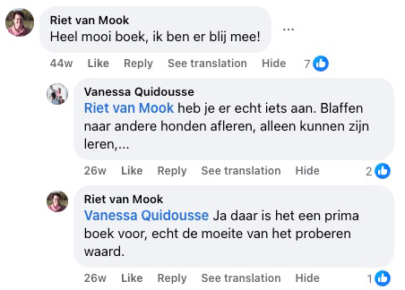
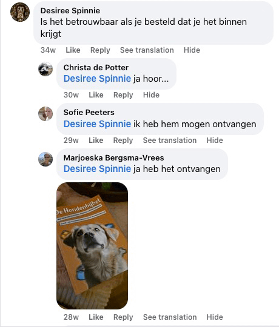
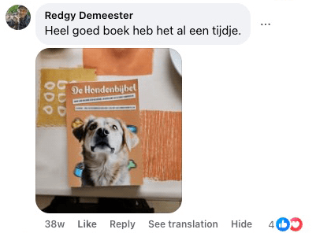
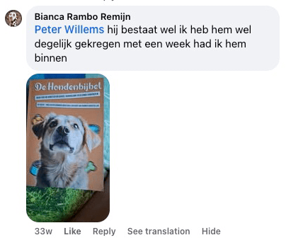
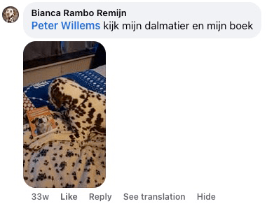
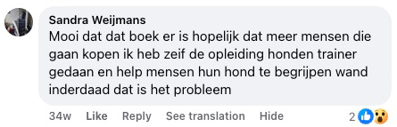
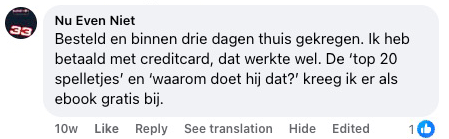
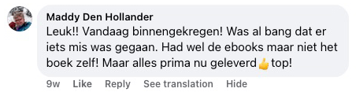
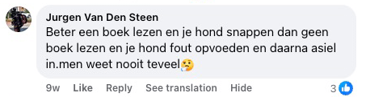
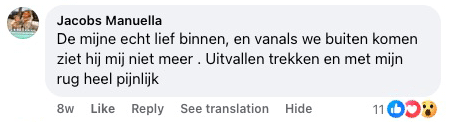
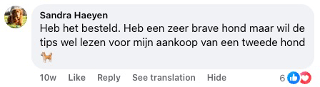
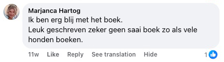
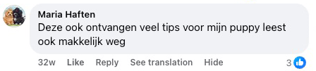
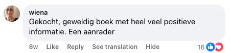
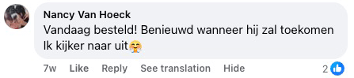
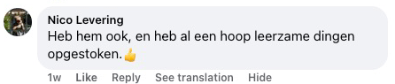
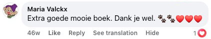
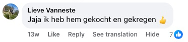
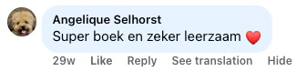
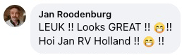
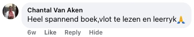
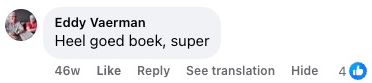
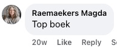